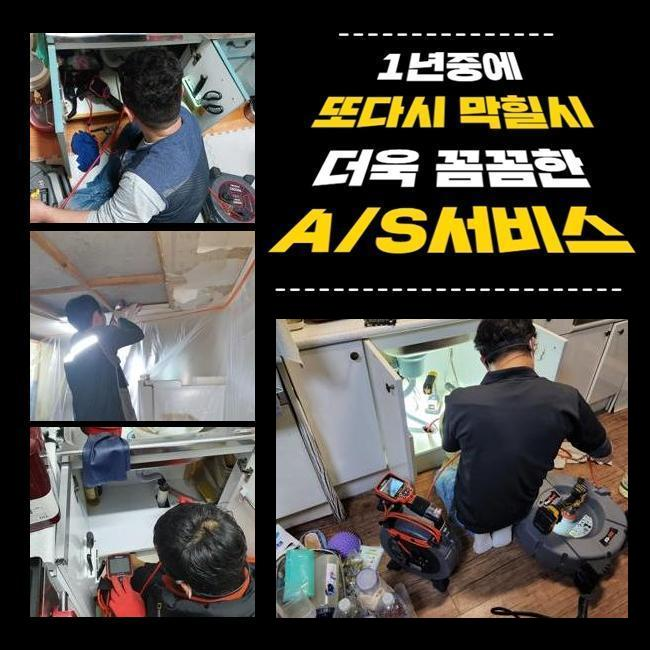
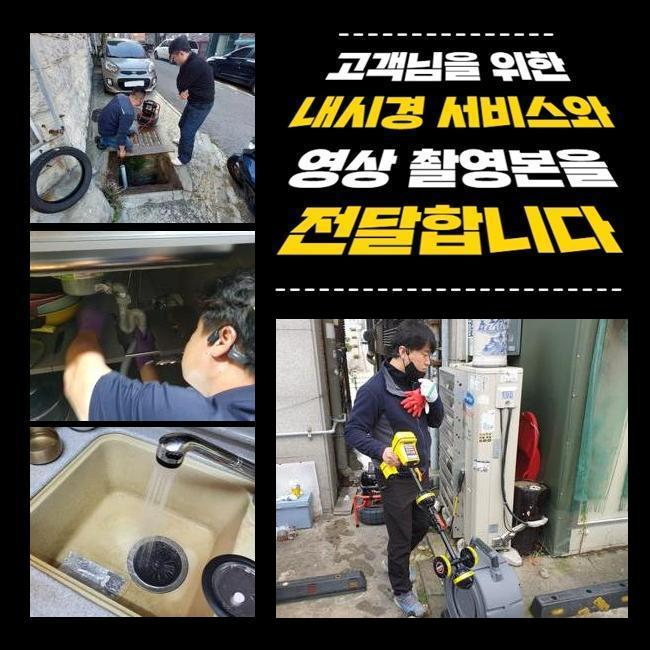
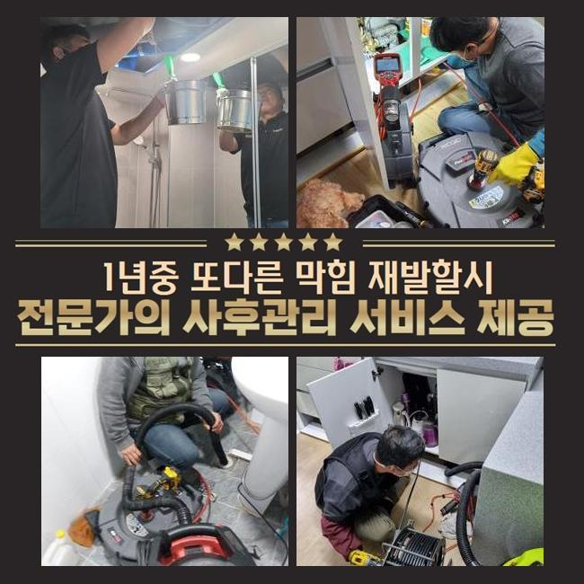
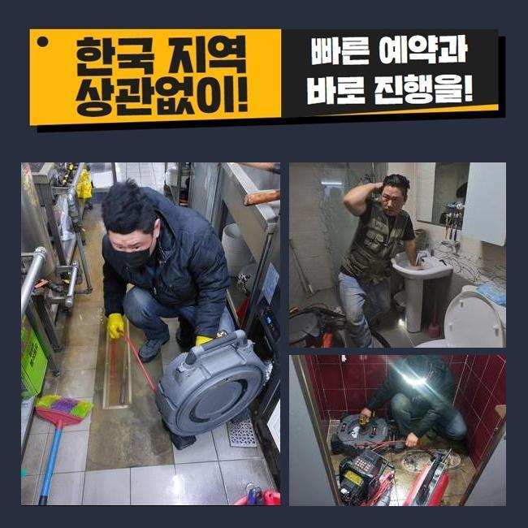
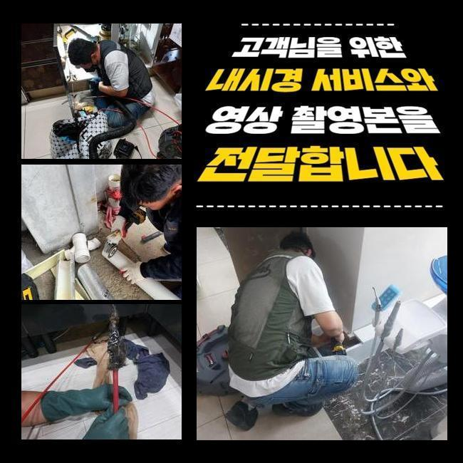
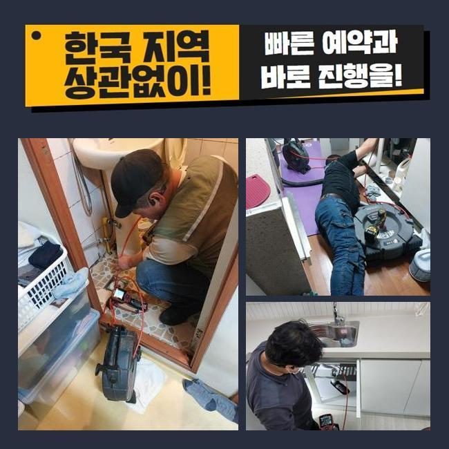

🏠 홍천 하수구역류 화장실변기누수 횡주배관 하수도동파
용인 변기막힘 전문 시공 후기

📋 작업 개요
- 위치: 용인
- 서비스 유형: 변기막힘, 하수구막힘, 배관막힘, 누수수리, 역류해결, 배관청소, 고압세척
- 작업 일시: 2024. 12. 29. 23:14
- 업체명: 하수구수사대 (010-5615-2118)
🔍 문제 상황
홍천 하수구역류 화장실변기누수 횡주배관 하수도동파
2주전에 물막힘이 생겨 여러 피해를 받으셨던 고객께 연락이 왔었죠
고객분의 경우 배관과 연관된 전문지식까진 아니였지만 본인만의 해결책을 답습한 상황이였죠
그리고 캡이나 여타 부품들을 깨끗히하고 막히게된 지점들을 찾기위해서 둘러보셨으나 어디가 시발점인것인지 알기가 힘들어 저희전문진에게 의뢰했던 것이였죠
자택에 내방하니 계속적인 자가적인 조치들로 지친 기색이 한눈에 들어왔는데요
고객님 차원에서는 기조를 짚어내기 힘든 사례가 많아요
도착 후 이곳저곳을 진단하니 주의해야할 요소는 없었습니다
의뢰자분은 바깥에 위치한 관로에서 까닭이 발현되었을 여지가 있을지모르겠다고 생각하게 되었어요
더불어 나무들이 자리한 상태라면 땅 밑으로 침투된다거나 여러 폐기물들이 빠질 확률들이 존재합니다
많은 이유로 바깥의 하수구가 막혀버렸을 수 있는데요

🔎 원인 분석
💡 전문가 진단: 정밀 진단 장비를 사용하여 슬러지의 고착 여부를 판명하고 타격/세척 작업을 실시했습니다.
고객님에게 지금 예견되는 까닭들을 일러드리고 밖의 배관실황을 진단해줄것을 안내드렸어요
고객분도 이러한 내용을 들어보시고 메인 하수 시스템 검수에 동의했죠
시공을 착수하기 이전에 장비점검도 해주었죠
배수장애의 이유는 한두가지가 아닌데요
배수설비가 드러나있으면 흙이라던가 주위에서 유입된 잔재들이 하수관으로 누적되기 시작해요
더군다나 비가 내릴때 외부시설의 상황들을 체크해주지않으면 점점 수렁으로 빠지게 될거에요
또한, 나무의 하수관으로 침투해버리는 사례도 자주 일어나요
배관들을 휘감거나 심할땐 균열을 생성하는 문제로도 야기시킵니다
해당 문제에서는 유수가 원활치못해 막혀버리는 사태가 생기게 될 수 있어요
그밖에 배수관이 노후되거나 파손에도 흐름들이 이뤄질 수가 없어서 막혀버려요

🔧 작업 과정
매립시기가 꽤 지나 표면이 튼튼하지 못하면 잔해물이 켜켜히 쌓이는 조건이 갖춰져요
마지막으로서 대다수 배수장애의 까닭은 주기적인 청소들을 신경안써서인데요
그때그때 소홀히 하면, 작은 잔해물이 축적되고 막혀버리게 되는 상황들이 심해질거에요
결과적으로는 외부라인을 그때그때 진단하고 관리하는게 예방으로서의 효과있는 방법들이라 할 수 있겠습니다
작용할만한 기조를 알고서 미리 대비해주는게 중요하겠습니다
내시경기기로 외부에 위치한 설비의 상황들을 체크해보았어요
내시경장치로 살폈더니 배수관의 군데군데마다 이물들과 기름으로 인하여 엉망이 된 것이 확인됐죠
이렇게 하수도가 막혀버리면 물의 배수가 불가하여 역류문제들도 나타나므로 대처를 이행하는게 중요합니다
상태를 보고 여러 폐기물들이 누적된 지점을 목표로 해서 청소키로 했답니다
고압분사방식을 준비해 오염된 관로를 구간마다 세척했습니다
뭉쳐있던 슬러지들을 심층부에서 청소하니 배수정체의 하수가 배출되었는데요
최초에는 잔재들이 배출됐고 이물이 청소되며 시간이 흐름에 따라 수월하게 컨디션을 회복했는데요
물이 신속히 출수되는 현상을 관찰하며 의뢰자께서도 전부 목격하셨습니다
청소들이 이행되면서 의뢰자와 이야기를 나누며 잔재들이 쌓이게되는 연유들을 안내하니 고객도 평소 궁금해했던 사안을 물으셨습니다
이로써 고객분은 관리하는 것의 중요도를 인지하셨고 나중에까지 때에 맞춘 점검들의 필요성들에 관해서도 공감했죠
마침내 작업들이 끝나고 하수도가 완전히 바로 잡히면서 고객분은 통수되는 현상도 볼 수 있었어요


✅ 작업 완료
고객에게도 결과들에 대해 안내하고 미래에도의 관리방법들까지 안내했답니다
정기적으로 외측을 점검해본다던가 상황에 따라서는 전문진들의 해결책을 받아보는게 합리적이라는 것을 안내드렸어요
최종적으로 고객님에게서 고민들을 해결하게되어 안심할 수 있었죠
고객의 안심할 수 있는 물빠짐에 답답함이 없도록 언제라도 저희께 상담을 진행해보세요



⚠️ 베란다 누수 및 방수 관리 방법
- ✅ 비가 많이 올 때 창틀 주변이나 아래층 천장에 얼룩이 생기는지 정기적으로 확인해 보세요.
- ✅ 우수관 주변 실리콘 마감이 들뜨거나 깨진 틈새가 있는지 손상 여부를 수시로 체크하세요.
- ✅ 베란다 바닥 타일의 줄눈(메지)이 소실되면 그 틈으로 물이 침투하여 누수가 유발됩니다.
- ✅ 누수 의심 증상 발견 시 방치하면 아래층 손실이 커지므로 즉시 전문가의 진단을 받으십시오.
💡 핵심 정리
- 확실한 장비 작업(내시경 점검 및 샤프트 스케일링)으로 원인을 뿌리 뽑습니다.
- 작업 후 1년 이내에 동일한 부위 재발 시 100% 무상 A/S 서비스를 보장합니다.
- 서울 · 경기 · 인천 전 지역에 24시간 언제든 긴급 출동할 수 있도록 항시 대기 중입니다.
❓ 자주 묻는 질문 (FAQ)
🚨 용인 변기막힘 문제로 고민이신가요?
정확한 원인 진단과 확실한 시공으로 재발 없는 해결을 약속드립니다.
24시간 긴급 출동 | 서울 · 경기 · 인천 전지역 | 1년 내 재발 시 무상 A/S